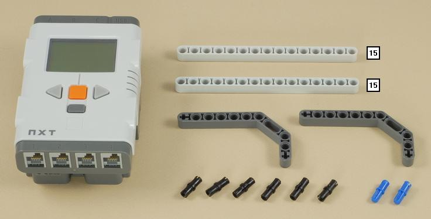
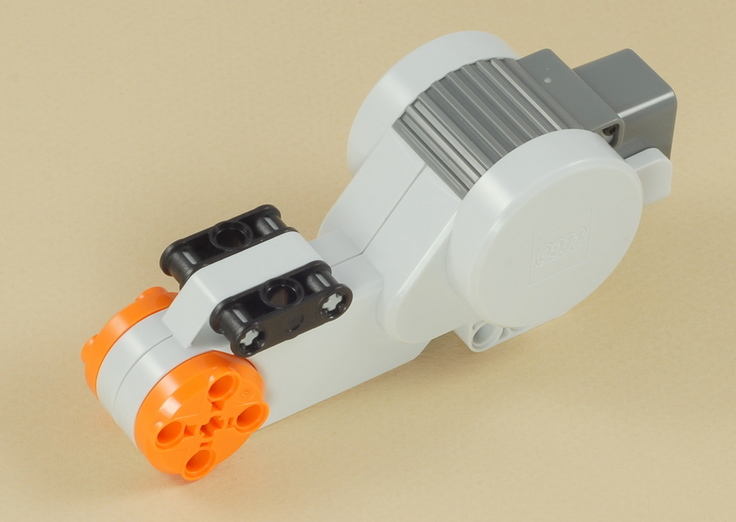
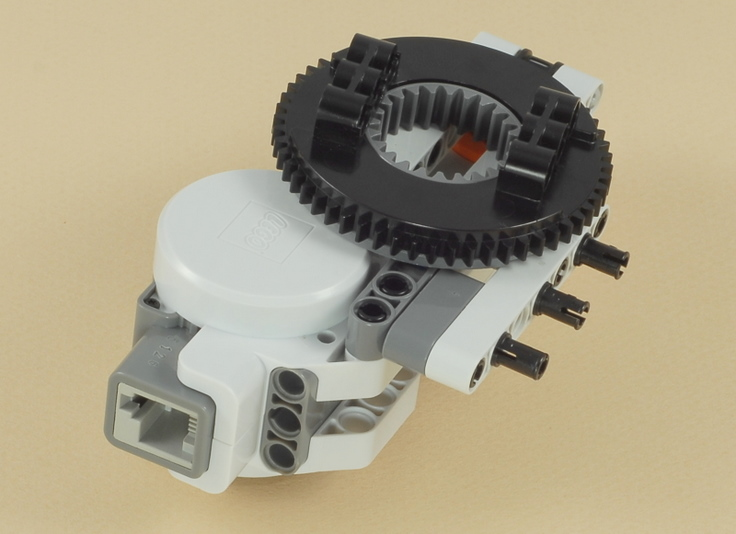
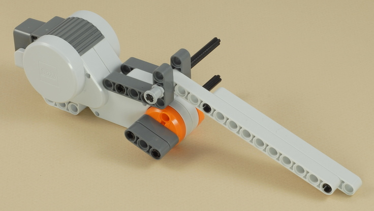
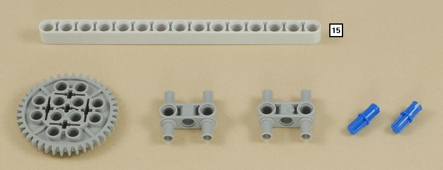
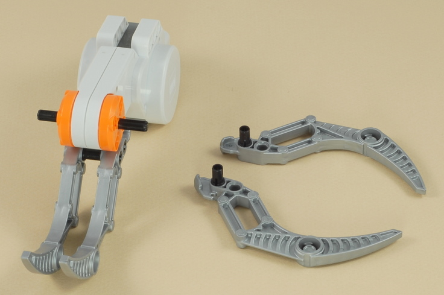
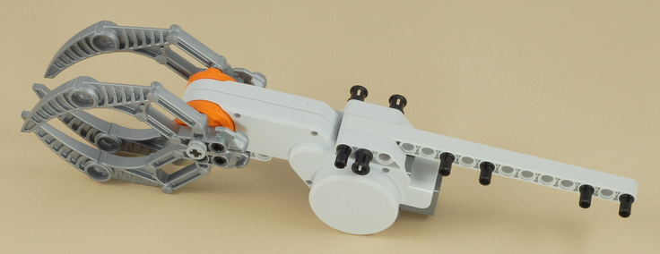
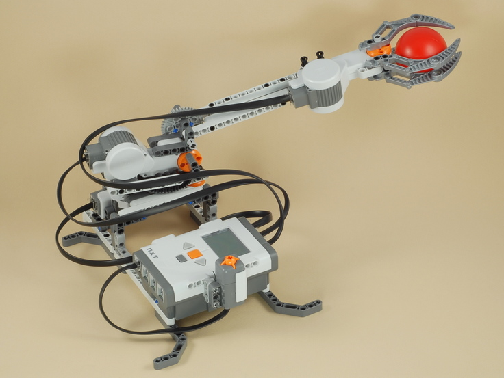

Fun Projects for your LEGO® MINDSTORMS® NXT!
|
|
Fun Projects for your LEGO® MINDSTORMS® NXT! |
| Robot Arm |
|

1

2
3

4

5

6

7
8
9
10
11
12

13

14
15
| The two brackets built in this step are used to attach the arm motor to the turntable base. You will need to attach one bracket first, then attach the arm motor, then attach the second bracket, as shown below. |
16

17

18

19
20
Four wires are needed in this step:
|

| Robot
Arm Programming Use the program Arm Control for the Robot Arm. This program allows you to control the robot arm using the Left, Right, and Enter buttons on the NXT brick and the touch sensor button. |
Using The Robot Arm
|
Challenges
|
|
Copyright
©
2007-2009 by Dave Parker. All rights reserved. |